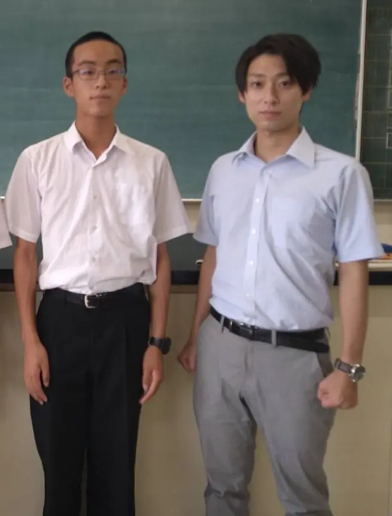

※クリックすると拡大できます
選手
【CQ, AQ, XQ】サイバークエスト AIクエスト Xクエスト : 橋口 伊吹(2年)
マネージャー : 橋口 伊吹 (2年)
コーチ : 南 竜一(物理科)
前回は公立の星として出場し、あと少しで敗れたような感じでした。こちらが去年の結果になります。
今年はどれくらい出場者がいるかは分からないですが、上位で予選を通過したいと思います。
もともと組んでいたチームでは夏休みに勉強会を行っていましたが、それぞれがどれくらい力を出せるか楽しみです。
余談ではありますが、もしお時間があれば橋口が作りました、浦高祭のサイトもご覧ください。